Руководство пользователя
Инструкция по работе с Системой анализа осанки
Шаг 1: Запуск приложения
Для начала работы клиенту необходимо запустить бота и открыть веб-приложение.
- Нажмите кнопку Начать анализ осанки в меню Telegram-бота.
- Telegram запросит разрешение на открытие веб-приложения. Нажмите кнопку Open во всплывающем окне, чтобы перейти по защищенной ссылке.
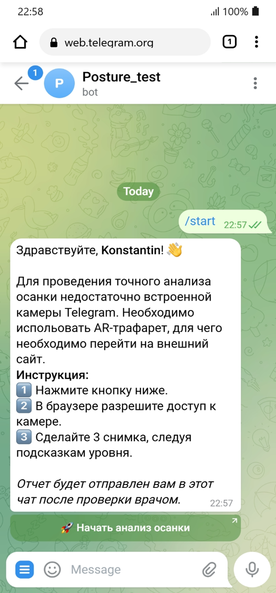

Шаг 2: Анкета и выбор тарифа
На этом этапе система предлагает познакомиться и указать Ваши Имя и Фамилию.
Необходимо также указать вашу роль - клиент.
В дальнейшем система запрашивает Ваши данные для подбора индивидуальных рекомендаций по улучшению Вашей осанки.
- Возраст: Введите ваш полный возраст цифрами.
- Вес и Рост: Укажите физические параметры.
- Пол: Выберите Муж. или Жен. с помощью переключателя.
- Режим съемки: Съемка в зеркале (3 фотографии: спереди, с левого бока, с правого бока); съемка с помощью таймера отложенного спуска, либо с помощью ассистента (добавляется вид сзади).
- Тариф: Выберите тип анализа — Базовый (автоматический расчет ИИ) или Premium (ИИ-анализ под контролем квалифицированного специалиста).
- Нажмите кнопку НАЧАТЬ внизу экрана, чтобы включить камеру.
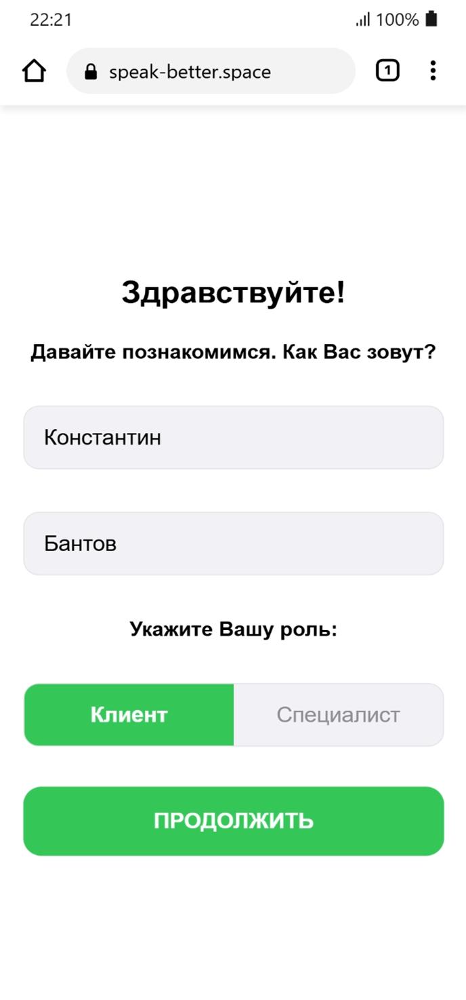
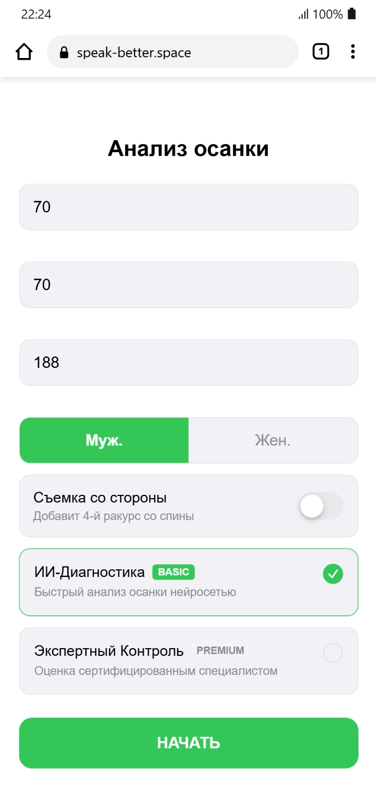
Шаг 3: Съемка фотографий
В зависимости от режима съемки нужно будет сделать 3 или 4 фотографии, следуя указаниям вверху экрана. После съемки каждой фотографии у Вас будет возможность одобрить, либо переснять фотографию.
- Расположение в кадре: Разместите фигуру между метками макушки и стоп по центру кадра, система уведомит Вас если фигура не в кадре, либо не в той позе.
- Индикатор горизонта: Зеленый цвет означает, что телефон выровнен, если телефон наклонен система уведомит Вас как скорректировать положение.
- Кнопка спуска: Становится активной (белой) только когда телефон расположен строго вертикально.
- Таймер: Установите телефон на полку, удерживайте иконку часов слева для отложенного спуска (3, 5, 10 сек - повторное нажатие сбрасывает таймер), и нажмите кнопку спуска. Отойдите от камеры так, чтобы оказаться в кадре. Спуск начнет срабатывать после того как вы полностью окажетесь в кадре.
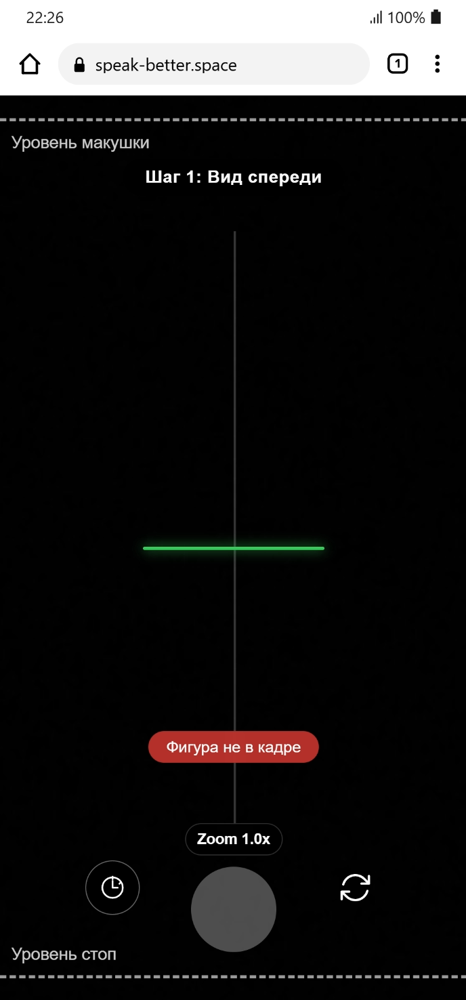

Шаг 4: Результат
Завершающий шаг, на котором данные уходят на сервер.
- Появится информационный экран Фотографии отправлены на анализ. После этого можно закрыть веб-приложение.
- Вернитесь в чат с ботом. Через некоторое время бот пришлет готовый PDF-отчет с подробными результатами анализа и персональными рекомендациями.
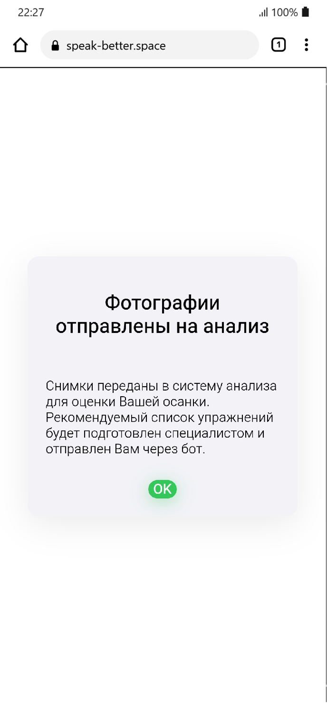

Шаг 1: Заявка на статус специалиста
Впервые зайдя в бота, специалист должен пройти регистрацию.
- Нажмите кнопку Начать анализ осанки в Telegram.
- Telegram запросит разрешение на открытие защищенной ссылки на веб-приложение, необходимо её открыть.

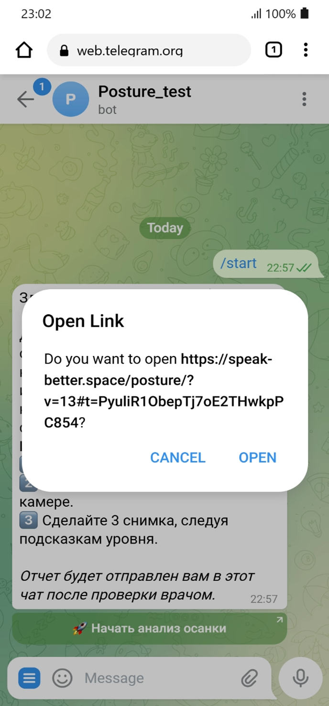
Шаг 2: Регистрация и отправка запроса
На этом этапе система предлагает познакомиться и указать Ваши Имя и Фамилию.
Необходимо также указать вашу роль - специалист.
Далее необходимо нажать кнопку ПРОДОЛЖИТЬ.
Система уведомит Вас о том, что заявка отправлена.
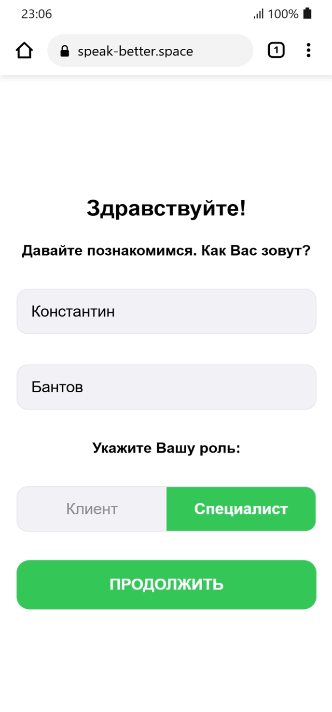
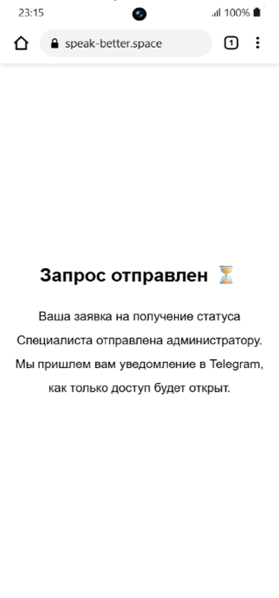
Шаг 3: Одобрение Администратором
Модерация заявки администратором проекта.
- Администратор проверяет Вашу заявку в панели управления и либо одобряет либо отказывает Вам.
- В случае получения автоматического уведомления: Ваша заявка одобрена, запустите анализ осанки повторно. - следует нажать кнопку Начать анализ осанки повторно и снова перейти по защищенной ссылке в кабинет специалиста.
- В случае отказа - необходимо связаться с администратором проекта для выяснения причин.
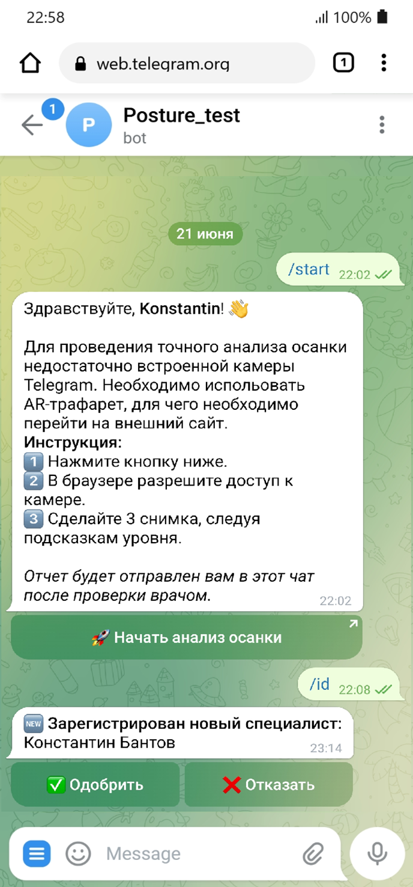
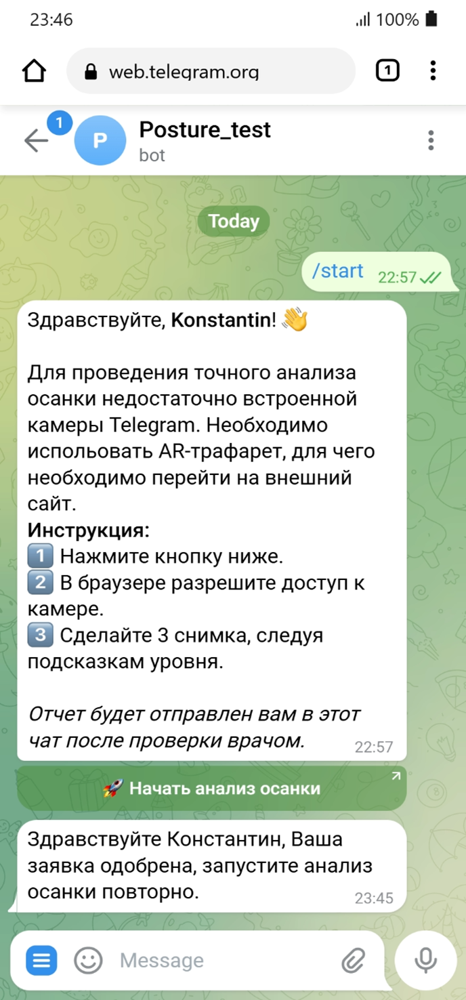
Шаг 4: Кабинет и Добавление клиента
В заголовке кабинета указаны Ваши инициалы, Имя и Фамилия. Далее идет переключатель списка Ваших текущих клиентов Мои клиенты и пула заявок, Новые заявки, от онлайн-клиентов, заказавших премиальную услугу. Для каждого режима предусмотрено поисковое окно для фильтра списка.
Под поисковым окном выводится список недавних клиентов либо недавно поступивших заявок.
Внизу экрана находится кнопка + ДОБАВИТЬ КЛИЕНТА, позволяющая Вам зарегистрировать пришедшего к Вам клиента.
В окне Анализ осанки для нового клиента необходимо указать его Имя и Фамилию, Возраст, Вес, Рост и Пол. Нажать кнопку НАЧАТЬ.
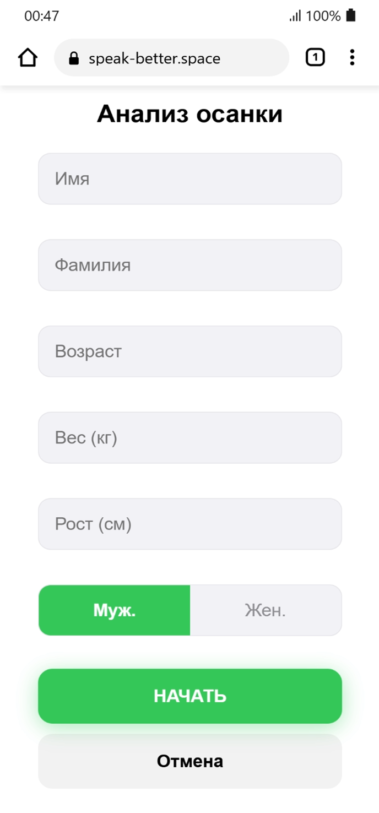
Шаг 5: Съемка фотографий
В отличие от клиентского режима, специалист делает фото своего клиента самостоятельно с четырех ракурсов - спереди, с левого и правого бока и сзади. После съемки каждой фотографии у Вас будет возможность одобрить, либо переснять фотографию.
- Расположение в кадре: Разместите фигуру между метками макушки и стоп по центру кадра, система уведомит Вас если фигура не в кадре, либо не в той позе.
- Индикатор горизонта: Зеленый цвет означает, что телефон выровнен, если телефон наклонен система уведомит Вас как скорректировать положение.
- Кнопка спуска: Становится активной (белой) только когда телефон расположен строго вертикально.
- Таймер: Позволяет установить телефон на полку, и скорректировать позу клиента самостоятельно. Для этого удерживайте иконку часов слева для отложенного спуска (3, 5, 10 сек - повторное нажатие сбрасывает таймер), и нажмите кнопку спуска. Расположите клиента так, чтобы он оказался в кадре между метками макушки и стоп. Спуск начнет срабатывать после того как клиент полностью окажется в кадре в правильной позиции (фронтально, слева, справа, спиной).

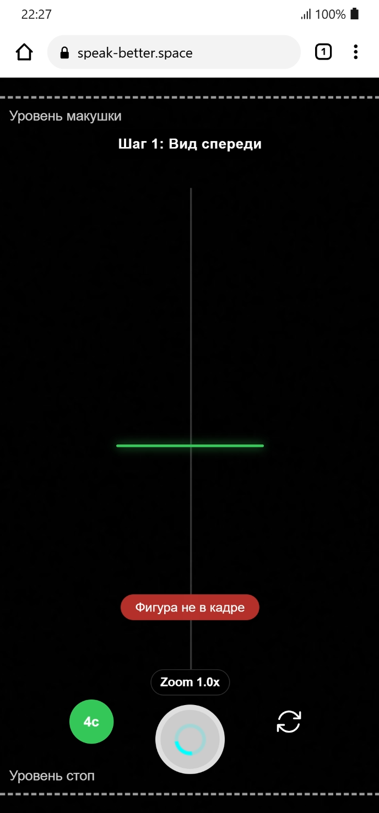
Шаг 6: Результат
Завершающий шаг, на котором данные уходят на сервер.
- Появится информационный экран "Данные клиентов и фотографии сохранены. Результаты ИИ-анализа будут доступны в карточке клиента." Кнопка Вернуться в кабинет позволяет вернуться в кабинет. Внимание: Встроенный просмотр результатов ИИ-анализа прямо в кабинете сейчас находится в стадии разработки. На данный момент система автоматически формирует итоговый PDF-отчет и присылает его вам в чат с ботом Telegram.
- Для возврата в чат с ботом нужно нажать системную кнопку закрытия окна ("крестик") в левом
верхнем углу экрана.
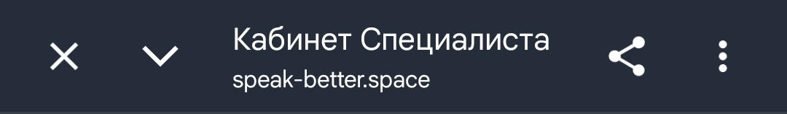
Через некоторое время бот пришлет готовый PDF-отчет с подробными результатами анализа и персональными рекомендациями для клиента.
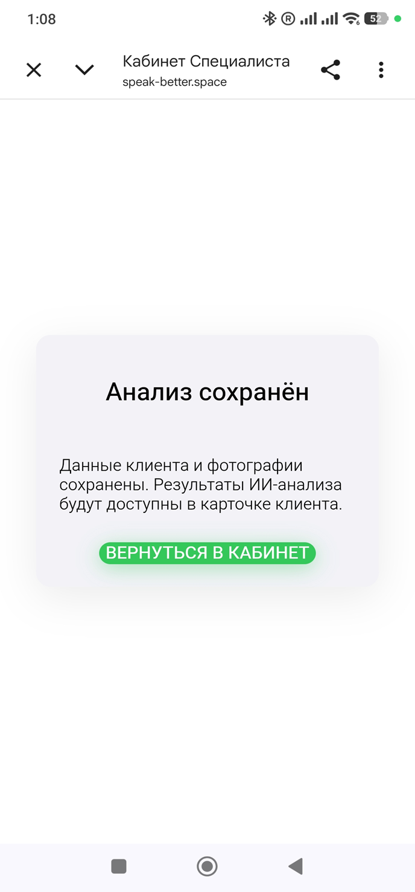

Шаг 7: Работа с клиентской базой - система ярлыков
Для удобной навигации по истории пациента в окне ПРОФИЛЬ используется система цветных ярлыков.
Типы отчетов (видны в Профиле клиента - История заявок):
- Базовый — отчет сгенерирован автоматически ИИ. Отображается в истории для понимания общей динамики осанки.
- Premium — премиальная заявка, созданная клиентом, подразумевающая ручную корректировку списка упражнений врачом.
Статусы заявок (видны как на карточке клиента - так и Профиле клиента - Истории заявок):
- Ожидает разбора — премиальная заявка находится в общем пуле (вкладка «Новые заявки») и ждет, пока кто-нибудь из врачей возьмет ее в работу.
- Требует анализа — ИИ-анализ проведен - требуется Ваша корректировка, система ждет ваших финальных действий (кнопка КОРРЕКТИРОВАТЬ).
- Завершено — вы уже отработали эту заявку, и итоговый расширенный PDF-отчет отправлен клиенту.
Шаг 8: Работа с клиентской базой - Мои Клиенты
Управление пациентами, закрепленными за вами.
- Во вкладке Мои клиенты отображаются карточки клиентов, которых Вы либо недавно создали, либо приняли в работу из Пула новых заявок на премиальные услуги. Прокрутка вниз позволяет увидеть большее количество клиентов.
- Нажмите КОРРЕКТИРОВАТЬ, чтобы открыть отчет пациента и скорректировать список упражнений. (Функция в разработке)
- Кнопка ПРОФИЛЬ открывает историю всех заявок пациента (Базовых и Премиум). для которых также отражается ярлык статуса
- Для того, чтобы сделать новый анализ текущего клиента необходимо пройти в Профиль и нажать кнопку + НОВЫЙ АНАЛИЗ. Будет запущена форма Анализа осанки с предзаполненными данными клиента. Форма запускает стандартный процесс фотографирования клиента и ИИ анализа.
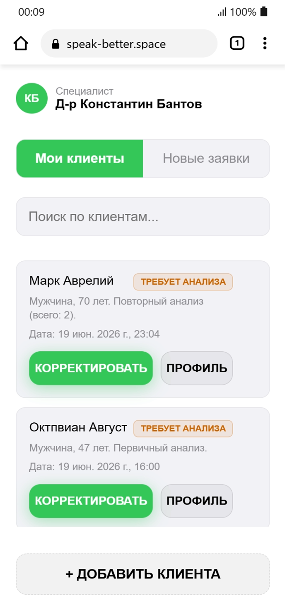
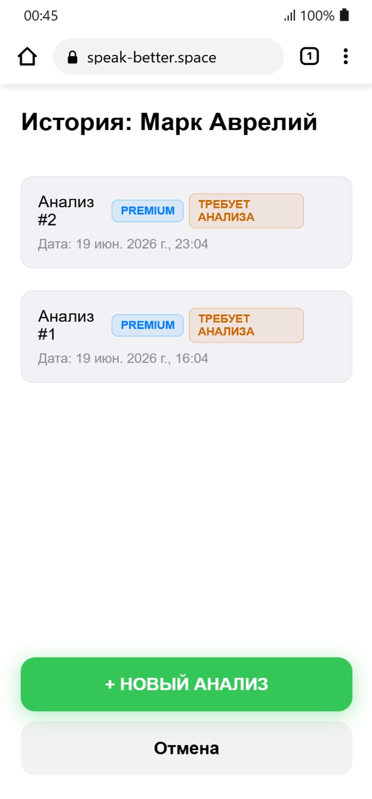
Шаг 9: Работа с клиентской базой - Новые заявки
Работа с входящими заявками от онлайн-клиентов, которые заказали премиальный доступ.
- Во вкладке «Новые заявки» отображаются заявки Premium, которые еще не взял в работу ни один врач.
- В заголовке страницы находятся две кнопки, которые позволяют фильтровать заявки от новых клиентов Новые и от повторных Повторные.
- Нажмите кнопку ПРОФИЛЬ, чтобы изучить всю прошлую историю пациента (базовые отчеты и прошлые премиальные заявки на анализ).
- Нажмите ВЗЯТЬ В РАБОТУ, чтобы закрепить этого клиента за собой. Нажатие этой кнопки - переводит карточку из Пула Новые заявки - в список Мои клиенты.
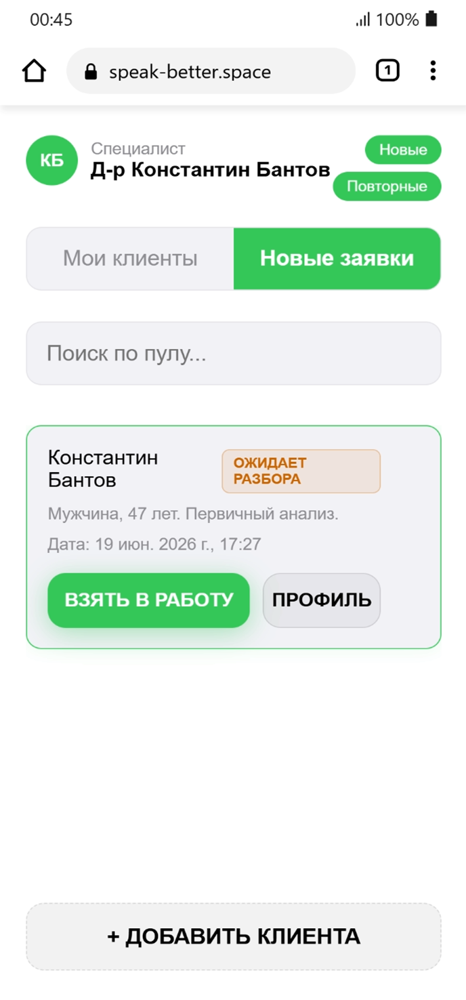
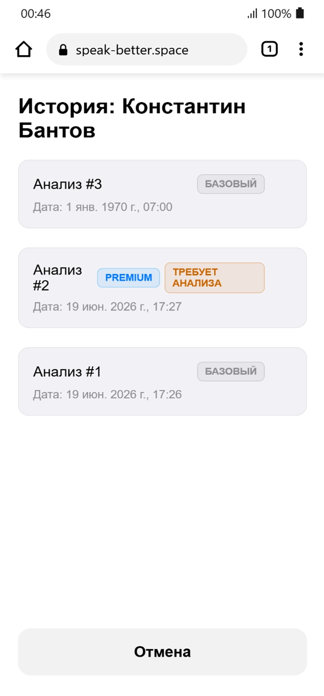